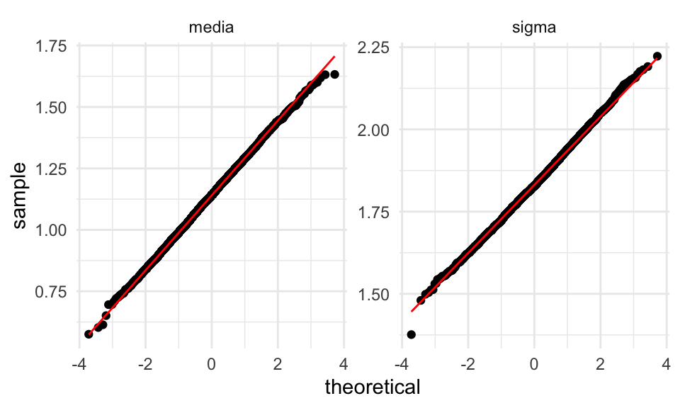
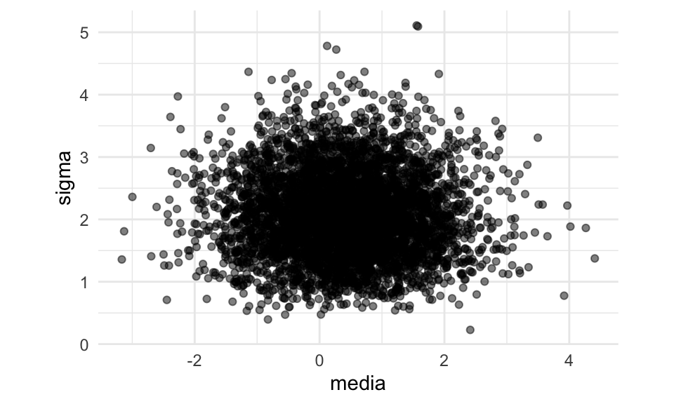
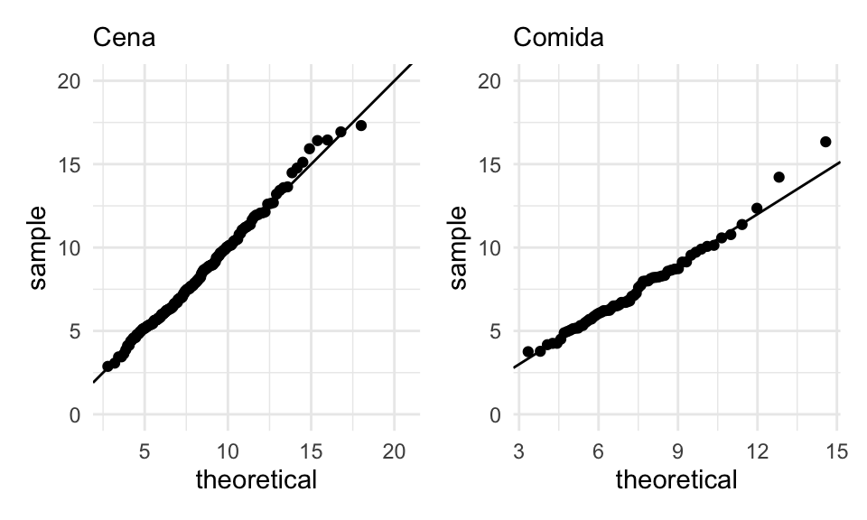
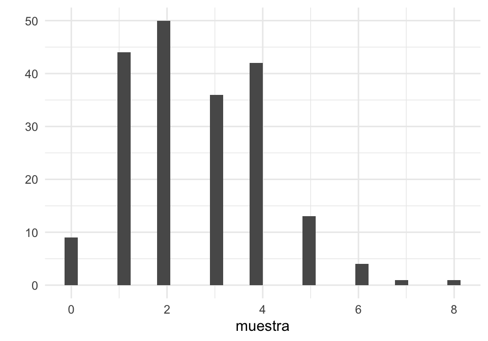
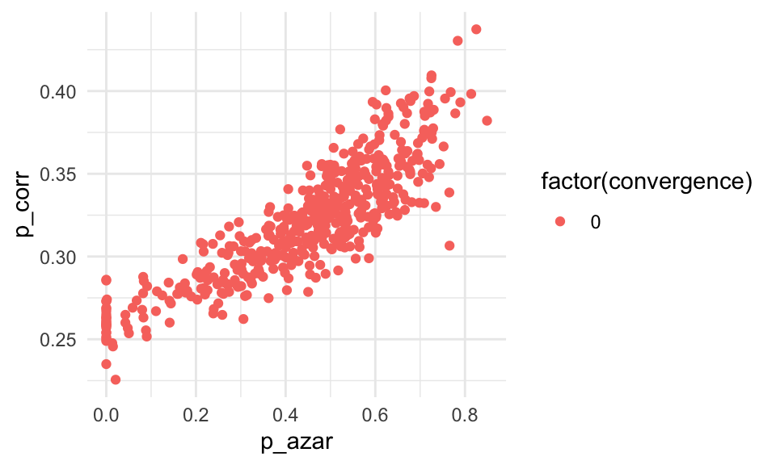

Sección 8 Bootstrap paramétrico
Cuando nuestras observaciones provienen de un modelo teórico parametrizado con algunos parámetros que queremos estimar, y utilizamos máxima verosimilitud para hacer nuestra estimación, no podemos aplicar directamente el bootstrap no paramétrico que vimos en las secciones anteriores. La razón es que nuestro estimador, en general, no es un estimador de plug-in necesariamente.
Sin embargo, suponiendo que el modelo paramétrico que estamos usando es apropiado, podemos remuestrear de tal modelo para estimar la varianza de nuestros estimadores. Este proceso se llama el bootstrap paramétrico. Antes de hacer una definición precisa, veamos cómo calcularíamos error estándar para los estimadores de máxima verosimilitud de la normal que vimos arriba.
Ejemplo (sección máxima verosimilitud). Como ejercicio, podemos encontrar los estimadores de máxima verosimilitud cuando tenemos una muestra \(X_1, \ldots, X_n \sim \mathsf{N}(\mu, \sigma^2)\) (puedes derivar e igualar a cero para encontrar el mínimo). También podemos resolver numéricamente.
Supongamos que tenemos la siguiente muestra:
La función generadora de la log-verosimilitud para una muestra es (ve la expresión del ejercicio anterior y calcula su logaritmo), y generamos la función de verosimilitud para nuestra muestra:
crear_log_p <- function(x){
log_p <- function(pars){
media = pars[1]
desv_est = pars[2]
n <- length(x)
# ve la ecuación del ejercicio anterior
z <- (x - media) / desv_est
log_verosim <- -(log(desv_est) + 0.5 * mean(z^2))
log_verosim
}
log_p
}
log_p <- crear_log_p(muestra)Ahora optimizamos (checa que el método converge):
res <- optim(c(0, 0.5), log_p, control = list(fnscale = -1, maxit = 1000), method = "Nelder-Mead")
res$convergence## [1] 0est_mv <- tibble(parametro = c("media", "sigma"), estimador = res$par) %>%
column_to_rownames(var = "parametro")Una vez que tenemos nuestros estimadores puntuales,
## estimador
## media 1.136001
## sigma 1.838421Sustitumos estos parámetros en la distribución normal y simulamos una muestra del mismo tamaño que la original:
simular_modelo <- function(n, media, sigma){
rnorm(n, media, sigma)
}
muestra_bootstrap <- simular_modelo(length(muestra),
est_mv["media", "estimador"],
est_mv["sigma", "estimador"])
head(muestra_bootstrap)## [1] 1.8583885 2.2084326 2.5852895 2.5174462 -0.7428032 0.5995989Una vez que tenemos esta muestra bootstrap recalculamos los estimadores de máxima verosimlitud. Esto se hace optimizando:
# creamos nueva verosimilitud para muestra bootstrap
log_p_boot <- crear_log_p(muestra_bootstrap)
# optimizamos
res_boot <- optim(c(0, 0.5), log_p_boot,
control = list(fnscale = -1, maxit = 1000), method = "Nelder-Mead")
res_boot$convergence## [1] 0est_mv_boot <- tibble(parametro = c("media", "sigma"), estimador = res_boot$par) %>%
column_to_rownames(var = "parametro")
est_mv_boot## estimador
## media 1.235914
## sigma 1.710042Y esta es nuestra replicación bootstrap de los estimadores de máxima verosimilitud.
La idea es la misma que el bootstrap, con la ventaja de que estamos simulando del modelo que suponemos es el correcto, es decir, estamos usando información adicional que no teníamos en el bootstrap paramétrico. Ahora es necesario repetir un número grande de veces.
Nótese que esta función solo envuelve el proceso de remuestreo, cálculo de la función de verosimilitud y optimización:
rep_boot <- function(rep, crear_log_p, est_mv, n){
muestra_bootstrap <- simular_modelo(length(muestra),
est_mv["media", "estimador"],
est_mv["sigma", "estimador"])
log_p_boot <- crear_log_p(muestra_bootstrap)
# optimizamos
res_boot <- optim(c(0, 0.5), log_p_boot,
control = list(fnscale = -1, maxit = 1000), method = "Nelder-Mead")
try(if(res_boot$convergence != 0) stop("No se alcanzó convergencia."))
est_mv_boot <- tibble(parametro = c("media", "sigma"), estimador_boot = res_boot$par)
est_mv_boot$rep <- rep
est_mv_boot
}
reps_boot <- map_dfr(1:5000, ~ rep_boot(.x, crear_log_p, est_mv, n = length(muestra)))
reps_boot## # A tibble: 10,000 x 3
## parametro estimador_boot rep
## <chr> <dbl> <int>
## 1 media 0.797 1
## 2 sigma 1.90 1
## 3 media 1.23 2
## 4 sigma 1.96 2
## 5 media 1.14 3
## 6 sigma 1.89 3
## 7 media 1.33 4
## 8 sigma 1.73 4
## 9 media 1.19 5
## 10 sigma 1.73 5
## # … with 9,990 more rowsYa ahora podemos estimar error estándar:
error_est <- reps_boot %>% group_by(parametro) %>%
summarise(ee_boot = sd(estimador_boot))
error_est## # A tibble: 2 x 2
## parametro ee_boot
## <chr> <dbl>
## 1 media 0.150
## 2 sigma 0.106Así que nuestra estimación final sería:
bind_cols(est_mv, error_est) %>%
mutate(across(where(is.numeric), round, 3)) %>%
select(parametro, estimador, ee_boot)## parametro estimador ee_boot
## 1 media 1.136 0.150
## 2 sigma 1.838 0.106Si usamos la rutina estándar de R (dejaremos para después explicar cómo
calcula los errores estándar esta rutina —no es con bootstrap):
## # A tibble: 2 x 3
## term estimate std.error
## <chr> <dbl> <dbl>
## 1 mean 1.14 0.150
## 2 sd 1.84 0.106Podemos checar también la normalidad aproximada de las distribuciones bootstrap para construir nuestros intervalos:
ggplot(reps_boot, aes(sample = estimador_boot)) +
geom_qq() + geom_qq_line(colour = "red") +
facet_wrap(~parametro, scales = "free_y") La distribuciones son aproximadamente normales. Nótese que esto no siempre sucede, especialmente con parámetros de dispersión como \(\sigma\). (Examina las curvas de nivel del ejemplo de arriba).
Ejemplo. Supongamos que tenemos una muestra más chica. Repasa los pasos para asegurarte que entiendes el procedimiento:
set.seed(4182)
muestra <- rnorm(6, mean = 1, sd = 2)
# función de verosimilitud
log_p <- crear_log_p(muestra)
# máxima verosimilitud
res <- optim(c(0, 0.5), log_p, control = list(fnscale = -1, maxit = 1000), method = "Nelder-Mead")
res$convergence## [1] 0est_mv <- tibble(parametro = c("media", "sigma"), estimador = res$par) %>%
column_to_rownames(var = "parametro")
est_mv## estimador
## media 0.3982829
## sigma 2.3988969Hacemos bootstrap paramétrico
## # A tibble: 10,000 x 3
## parametro estimador_boot rep
## <chr> <dbl> <int>
## 1 media 0.789 1
## 2 sigma 0.945 1
## 3 media -0.103 2
## 4 sigma 1.37 2
## 5 media 1.96 3
## 6 sigma 1.70 3
## 7 media 1.55 4
## 8 sigma 2.28 4
## 9 media -0.228 5
## 10 sigma 1.73 5
## # … with 9,990 more rowsggplot(reps_boot, aes(sample = estimador_boot)) +
geom_qq() + geom_qq_line(colour = "red") +
facet_wrap(~parametro, scales = "free_y")
 Donde vemos que la distribución de \(\sigma\) tienen sesgo a la derecha, pues en algunos
casos obtenemos estimaciones muy cercanas a cero. Podemos
usar intervalos de percentiles.
Donde vemos que la distribución de \(\sigma\) tienen sesgo a la derecha, pues en algunos
casos obtenemos estimaciones muy cercanas a cero. Podemos
usar intervalos de percentiles.
Ejercicio (extra). Con más de un parámetro, podemos preguntarnos cómo dependen las estimaciones individuales - en algunos casos pueden estar correlacionadas. Podemos examinar este comportamiendo visualizando las replicaciones bootstrap
ggplot(reps_boot %>% pivot_wider(names_from = parametro, values_from = estimador_boot),
aes(x = media, y = sigma)) + geom_point(alpha = 0.5) + coord_equal() Esta es nuestra aproximación a la distribución de remuestreo de nuestro par de estadísticas \((\mu_{\mathsf{mv}}, \sigma_{\mathsf{mv}})\). En este caso, parecen ser independientes (lo cual es posible demostrar).
Bootstrap paramétrico. Supongamos que tenemos una muestra iid \(X_1,X_2,\ldots, X_n \sim f(x;\theta)\) de un modelo paramétrico, y un estimador de máxima verosimilitud \(\hat{\theta}_{\mathsf{mv}}\) para \(\theta\). El error estándar estimado para \(\hat{\theta}_{\mathsf{mv}}\) por medio del bootstrap paramétrico se calcula como sigue:
- Se calcula \(\hat{\theta}_{\mathsf{mv}}\) para la muestra observada
- Se simula una muestra iid de tamaño \(n\) de \(f(x; \hat{\theta}_{\mathsf{mv}})\) (muestra bootstrap)
- Se recalcula el estimador de máxima verosimilitud para la muestra bootstrap \(\hat{\theta^*}_{\mathsf{mv}}\)
- Se repiten 2-3 una cantidad grande de veces (1000 - 10000)
- Se calcula la desviación estándar de los valores \(\hat{\theta^*}_{\mathsf{mv}}\) obtenidos. Este es el error estándar estimado para el estimador \(\hat{\theta}_{\mathsf{mv}}\)
Ventajas y desventajas de bootstrap paramétrico
Ventaja: el bootstrap paramétrico puede dar estimadores más precisos e intervalos más angostos y bien calibrados que el no paramétrico, siempre y cuando el modelo teórico sea razonable.
Desventaja: Es necesario decidir el modelo teórico, que tendrá cierto grado de desajuste vs. el proceso generador real de los datos. Si el ajuste es muy malo, los resultados tienen poca utilidad. Para el no paramétrico no es necesario hacer supuestos teóricos.
Ventaja: el bootstrap paramétrico puede ser más escalable que el no paramétrico, pues no es necesario cargar y remuestrear los datos originales, y tenemos mejoras adicionales cuando tenemos expresiones explícitas para los estimadores de máxima verosimilitud (como en el caso normal, donde es innecesario hacer optimización numérica).
Desventaja: el bootstrap paramétrico es conceptualmente más complicado que el no paramétrico, y como vimos arriba, sus supuestos pueden ser más frágiles que los del no-paramétrico.
Verificando los supuestos distribucionales
Como hemos discutido antes, podemos hacer pruebas de hipótesis para checar si una muestra dada proviene de una distribución conocida. Sin embargo, la herramienta más común es la de los qq-plots, donde podemos juzgar fácilmente el tamaño de las desviaciones y si estas tienen implicaciones prácticas importantes.
El proceso es como sigue: si \(X_1,X_,\ldots, X_n\) es una muestra de \(f(x;\theta)\), calculamos el estimador de máxima verosimilitud \(\theta_{\mathsf{mv}}\) con los datos observados. Enchufamos \(\hat{f} = f(x;\theta_{\mathsf{mv}})\), y hacemos una gráfica de los cuantiles teóricos de \(\hat{f}\) contra los cuantiles muestrales.
Ejemplo. Consideramos la siguiente muestra:

Y queremos usar un modelo exponencial. Encontramos los estimadores de maxima verosimilitud
## rate
## 2.76054g_exp <- ggplot(tibble(muestra = muestra), aes(sample = muestra)) +
geom_qq(distribution = stats::qexp, dparams = list(rate = rate_mv)) +
geom_abline() + labs(subtitle = "Gráfica de cuantiles exponenciales")
g_exp
Donde vemos que el desajuste es considerable, y los datos tienen una cola derecha considerablemente más larga que la de exponencial (datos son casi dos veces más grande de lo que esperaríamos), y la cola izquierda está más comprimida en los datos que en una exponencial.
Sin embargo, si ajustamos una gamma:
est_mv <- MASS::fitdistr(muestra, "gamma")$estimate
g_gamma <- ggplot(tibble(muestra = muestra), aes(sample = muestra)) +
geom_qq(distribution = stats::qgamma,
dparams = list(shape = est_mv[1], rate = est_mv[2])) +
geom_abline() + labs(subtitle = "Gráfica de cuantiles gamma")
g_exp + g_gamma
El ajuste es considerablemente mejor para la distribución gamma (puedes hacer el protocolo rorschach para afinar tu diagnóstico de este tipo de gráficas).
Ejempĺo. Examinamos un modelo teórico para las cuentas totales del conjunto de datos de propinas. En primer lugar:
- Separamos comida y cena, pues sabemos que las cuentas tienden a ser más grandes en las cenas.
- En lugar de modelar la cuenta total, modelamos el gasto por persona, es decir, la cuenta total dividida por el numero de personas. Grupos grandes pueden producir colas largas que no tenemos necesidad de modelar de manera probabilística, pues conocemos el número de personas.
En este caso intentaremos un modelo lognormal, es decir, el logaritmo de los valores observados se comporta aproximadamente normal. Puedes también intentar con una distribución gamma.
Separamos por Cena y Comida, dividimos entre número de personas y probamos ajustando un modelo para cada horario:
propinas <- read_csv("data/propinas.csv") %>%
mutate(cuenta_persona = cuenta_total / num_personas)
propinas_mv <- propinas %>%
group_by(momento) %>%
summarise(est_mv = list(tidy(MASS::fitdistr(cuenta_persona, "lognormal")))) %>%
unnest(est_mv)
propinas_mv ## # A tibble: 4 x 4
## momento term estimate std.error
## <chr> <chr> <dbl> <dbl>
## 1 Cena meanlog 2.03 0.0273
## 2 Cena sdlog 0.362 0.0193
## 3 Comida meanlog 1.94 0.0366
## 4 Comida sdlog 0.302 0.0259Ojo: estos parámetros están en escala logarítmica. Puedes checar aqui para ver cómo calcular media y desviación estándar de las distribuciones originales. Ahora verificamos el ajuste:
g_1 <- ggplot(propinas %>% filter(momento == "Cena"), aes(sample = cuenta_persona)) +
geom_qq(dparams = list(mean = propinas_mv$estimate[1], sd = propinas_mv$estimate[2]),
distribution = stats::qlnorm) + ylim(c(0, 20)) +
geom_abline() + labs(subtitle = "Cena")
g_2 <- ggplot(propinas %>% filter(momento == "Comida"), aes(sample = cuenta_persona)) +
geom_qq(dparams = list(mean = propinas_mv$estimate[3], sd = propinas_mv$estimate[4]),
distribution = stats::qlnorm) + ylim(c(0, 20)) +
geom_abline() + labs(subtitle = "Comida")
g_1 + g_2 El ajuste es bueno, aunque podríamos checar la cola de la derecha en la Comida: ¿por qué existen esos valores relativamente grandes (alrededor de 25% más altos de lo que esperaríamos).
- ¿Tiene sentido ajustar dos distribuciones con parámetros separados? ¿Crees que estas dos distribuciones podrían compartir algún parámetro? Para esto puedes revisar el error estándar de los estimadores de máxima verosimilitud que mostramos arriba. ¿Qué ventajas verías en usar menos parámetros? ¿Cómo implementarías la estimación?
- ¿Qué pasa si intentas ajustar un modelo normal a estos datos?
Modelos mal identificados
Para algunos modelos y algunos parámetros, puede suceder que existan varias configuraciones muy diferentes de los parámetros que sean consistentes con los datos (en términos de verosimilitud, tienen verosimilitud alta similar), y en estos casos decimos que el modelo (con los datos observados) está mal identificado.
Esto presenta problemas múltiples: optimizar es más difícil, hay incertidumbre grande en la estimación, y los parámetros se acoplan, haciendo difícil su interpretación.
Ejemplo. Consideremos el ejemplo anterior donde queríamos estimar dos proporciones: la proporción de examenes contestados al azar y la tasa de correctos. Vamos a suponer que la probabilidad de tener respuesta correcta dado que el examen no fue contestado al azar no es muy lejano a 1/5, que es la probabilidad de acertar a al azar.
Aquí está la función para simular y la log verosimilitud correspondiente. Aquí vamos a ver un problema más difícil, así que usaremos la transformación logit para las proporciones, y no obtener resultados fuera del rango 0-1 al optimizar:
inv_logit <- function(theta){
exp(theta) / (1 + exp(theta))
}
logit <- function(p){
log(p / (1-p))
}
# Simular datos
sim_formas <- function(probs){
p_azar <- probs[1]
p_corr <- probs[2]
tipo <- rbinom(1, 1, 1 - p_azar)
if(tipo==0){
# al azar
x <- rbinom(1, 10, 1/5)
} else {
# no al azar
x <- rbinom(1, 10, p_corr)
}
x
}
simular_modelo <- function(n, params){
muestra <- map_dbl(1:n, ~ sim_formas(probs = inv_logit(params)))
muestra
}
# log verosimilitud
crear_log_p <- function(x){
log_p <- function(pars){
p_azar = inv_logit(pars[1])
p_corr = inv_logit(pars[2])
sum(log(p_azar * dbinom(x, 10, 1/5) + (1 - p_azar) * dbinom(x, 10, p_corr)))
}
log_p
}
# simular datos
set.seed(12)
muestra <- simular_modelo(200, params = logit(c(0.3, 0.29)))
qplot(muestra)
log_p <- crear_log_p(muestra)
res <- optim(c(0.0, 0.0), log_p, control = list(fnscale = -1))
res$convergence## [1] 0## p_azar_logit p_corr_logit
## -0.0343061 -0.7474912## p_azar p_corr
## 0.4914243 0.3213682En primer lugar, parece ser que nuestras estimaciones son menos precias. Vamos a hacer bootstrap paramétrico:
rep_boot <- function(rep, simular, crear_log_p, pars, n){
muestra_bootstrap <- simular(n, pars)
log_p_boot <- crear_log_p(muestra_bootstrap)
# optimizamos
res_boot <- optim(c(0.0, 0.0), log_p_boot,
control = list(fnscale = -1))
try(if(res_boot$convergence != 0) stop("No se alcanzó convergencia."))
est_mv_boot <- res_boot$par
names(est_mv_boot) <- names(pars)
est_mv_boot["rep"] <- rep
est_mv_boot["convergence"] <- res_boot$convergence
est_mv_boot
}
set.seed(8934)
reps_boot <- map(1:500, ~ rep_boot(.x, simular_modelo, crear_log_p, est_mv,
n = length(muestra))) %>%
bind_rows
reps_boot %>% mutate(across(everything(), round, 2)) %>% head## # A tibble: 6 x 4
## p_azar_logit p_corr_logit rep convergence
## <dbl> <dbl> <dbl> <dbl>
## 1 0.32 -0.7 1 0
## 2 0.13 -0.71 2 0
## 3 0.11 -0.78 3 0
## 4 -0.19 -0.71 4 0
## 5 0.36 -0.55 5 0
## 6 0.74 -0.61 6 0En primer lugar, notamos varíación muy alta en los estimadores. El optimizador encontró resultados que no tienen sentido:
ggplot(reps_boot,
aes(x = inv_logit(p_azar_logit), y = inv_logit(p_corr_logit),
colour = factor(convergence))) +
geom_point() +
xlab("p_azar") + ylab("p_corr") Y notamos un problema grave: Tenemos mucha variación en nuestros estimadores, y la correlación entre las estimaciones es alta. Esto deberíamos haberlo esperado, pues como las probabilidades de contestar correctamente son muy similares a las de contestar al azar:
- Existen muchas combinaciones de parámetros que son consistentes con los datos. Decimos entonces que este modelo está mal identificado con estos datos.
- La mala identificación, como vemos, es una propiedad tanto de modelo como datos.
- ¿Qué conclusiones acerca del examen obtienes al ver estas simulaciones bootstrap? ¿Cómo se deberían reportar estos resultados?
- Qué pasa en este ejemplo si la \(p_corr\) es más grande, o el tamaño de muestra es más grande?
- Repite el ejercicio con los parámetros del primer ejemplo (\(p_azar = 0.3, p_corr=0.75\)) y el mismo tamaño de muestra. ¿Qué sucede en este caso?
- En el caso extremo, decimos que el modelo no está indentificado, y eso generalmente sucede por un problema en el planteamiento del modelo, independientemente de los datos. ¿Puedes imaginar un modelo así?